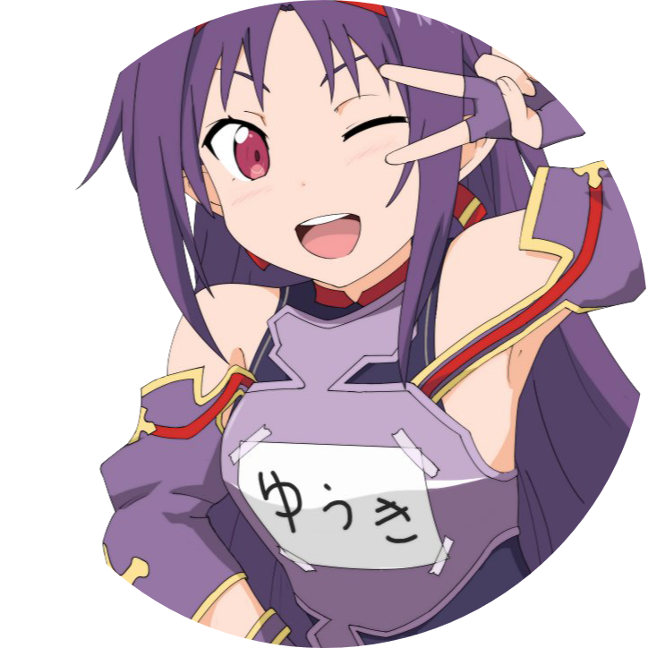

|  |
Kimono きもの Studio
The Naicu Experience ლ(╹◡╹ლ) |
Do you feel like you are not hanging out with the right friends?
Are you different from average people?
Is your identity not fully expressed yet?
Have you ever been told that you have unrealistic dreams?
Are you a creative person?
We got you uWu!
We want to give you that push to freely express yourself and
unleash your inner weeb. To establish your identity and finding yourself
is our ultimate mission! As you get older and you have to make the decision about
what you'll become and often we don't even know it yet. We don't get enough
time to discover ourselves and find our true path. This one is dedicated for
anime/manga lovers, gamers, twitch streamers, language learners, people who
are interested to learn about different cultures, and k-pop fans.
Kimono きもの Studio is the place where we unite as one, have fun,
share our stories, and make a lot of amazing friends!
Our Projects 🐈
Work Experience
| Dates |
Work |
| 2020-now |
Entrepreneur at Kimono きもの Studio |
| 2019-2020 |
Drop-out at Erasmus University Rotterdam |
Skills
| Breakdancing |
🌟🌟🌟 |
| Choreography |
🌟🌟🌟 |
| Drawing |
🌟🌟🌟 |
Kimono's hobbies
Contact Me